Segurança do Trabalho Inteligente
PROTÓTIPO
Monitoramento automatizado de EPI com Visão Computacional
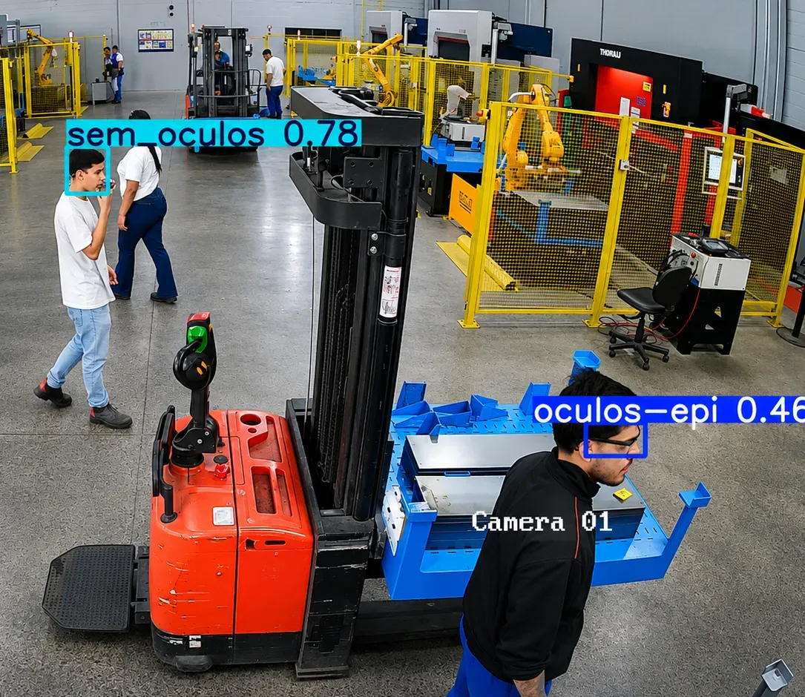
Ambiente Seguro & Prevenção
O problema do uso de EPIs e o propósito do protótipo
- O Desafio dos Acidentes: Incidentes visuais ou oculares no chão de fábrica representam riscos graves à saúde física e geram paradas operacionais.
- Objetivo Principal: Garantir um ambiente de trabalho 100% seguro através do monitoramento automatizado, auxiliando a equipe de segurança a zerar desvios.
- Natureza de Protótipo: Desenvolvido como uma prova de conceito (PoC) para validar a viabilidade de aplicar visão computacional na detecção em tempo real na Facchini.
🛡️ Foco: Reduzir Riscos
A detecção precoce de colaboradores sem óculos de proteção atua antes que acidentes ocorram nas áreas de risco, como solda e montagem.
🔬 Prova de Conceito (PoC)
Validação técnica focada em rodar o algoritmo YOLOv8 nas câmeras locais da fábrica com baixíssimo tempo de resposta.
Força-Tarefa de Dados
Superação contra o relógio nas primeiras etapas
- Adaptação e Atraso Inicial: Entrada tardia no projeto, computadores sem ferramentas prontas (MySQL Workbench) e câmeras locais inoperantes.
- Agilidade do Time: Abertura rápida de chamados, uso de webcams provisórias e início imediato das gravações.
- Trabalho em Grupo Roboflow Pro: Uso da janela de teste Pro gratuito para acelerar a catalogação de imagens.
Integração
Ajuste de computadores & webcams
Roboflow Pro
Aproveitamento da janela gratuita
Força-Tarefa
Catalogação manual em tempo recorde
Banco Robusto
+50.000 imagens variadas e sem falhas
Processo de Labelização
Ensinando a IA a interpretar termos técnicos e objetos
- Labelização (Rotulagem): Identificação e marcação manual dos objetos em cada imagem. Dizemos à IA o que ela deve procurar.
- Bounding Boxes (Caixas delimitadoras): As caixas desenhadas sobre o usuário para delimitar o local exato do rosto e dos óculos de proteção.
- Classes de Detecção: Dividimos o aprendizado em duas categorias claras: "COM ÓCULOS" e "SEM ÓCULOS DE PROTEÇÃO".
- Data Augmentation (Aumento de Dados): Criação de variações das imagens (rotação, brilho, zoom) para que a IA aprenda sob diferentes iluminações e ângulos.
Anotação Roboflow
Cada imagem passou por validação humana rigorosa para posicionar as caixas sobre os olhos de cada colaborador com precisão milimétrica.
Data Augmentation na Prática
Multiplicamos o poder do nosso dataset inserindo ruídos, variações de contraste de solda e inclinação para evitar que o modelo falhe na fábrica real.
Roboflow: Gestão de Dados
Coleta massiva e refinamento técnico
- Trabalho em Conjunto: Um processo de meses de cooperação mútua para atingir o volume e a qualidade necessários para o treinamento da IA.
- +50.000 Fotos: Alcançamos a marca de mais de 50 mil imagens catalogadas e rotuladas, garantindo um dataset robusto.
- Captura via Câmeras Locais: A grande maioria das fotos utilizadas foi capturada diretamente pelas câmeras disponibilizadas para o projeto, refletindo o cenário real da fábrica.

Estratégia de Treinamento
Contornando gargalos físicos de processamento
- Gargalo Local: Treinamento local lento e instável. Equipamentos não suportavam a robustez do "cérebro" da IA.
- Workstation: Apesar de disponibilizada, a GPU antiga (AMD) forçava o processamento para a CPU, travando o progresso.
- Solução em Nuvem (Google Colab Pro): Investimento em servidores de alta performance. Processamento escalável e velocidade extrema.
Hardware Local vs. Google Colab Pro
Desempenho de Detecção
Resultados consolidados do melhor modelo treinado
Métricas obtidas no Google Colab Pro com o YOLOv8 ao fim do treinamento. Estes índices determinam o sucesso do protótipo no chão de fábrica.
Curva de Evolução do Aprendizado
Entendendo as Métricas
Explicando o comportamento do modelo de forma técnica e descomplicada
Precisão (Precision) Precisão (Pontaria)
De todas as predições de uso de EPI feitas pelo modelo, quantas estavam realmente corretas? Foca em eliminar os Falsos Positivos (falsos alertas).
De todos os chutes que o atacante dá em direção ao gol, quantos realmente entram? Alta precisão significa que ele raramente chuta para fora.
Sensibilidade (Recall) Recall (Presença de Área)
De todos os colaboradores sem óculos que realmente estavam presentes, quantos o modelo detectou? Foca em eliminar os Falsos Negativos (deixar passar infrações).
De todos os cruzamentos na área (infrações), em quantos o atacante chega para cabecear? Alto recall garante que nenhuma oportunidade seja perdida.
Acurácia (Accuracy) Acurácia (Aproveitamento)
Taxa de acertos gerais do modelo sobre todas as predições. É a proporção entre a soma das detecções corretas de EPI e a totalidade das predições realizadas.
É a eficiência geral do atleta no jogo: passes corretos, desarmes efetuados e chutes certos sobre tudo o que tentou. Sua média total em campo.
mAP50-95 mAP50-95 (Nota do Craque)
Média de precisão calculada sob múltiplos limiares de sobreposição de caixas (IoU) de 0.50 a 0.95. É o teste de estresse de qualidade mais rigoroso para IA.
A nota da partida dada ao jogador considerando todas as jogadas fáceis (pênaltis) e difíceis (chutes de longe). O critério mais completo de qualidade.
Curva de Aprendizado / Perda Curva de Aprendizado (Temporada)
Gráfico do decaimento das funções de custo (Loss) nas épocas. Demonstra a convergência estatística do otimizador e a estabilização das métricas de generalização.
Pré-temporada do time: no começo há desentrosamento e muitos erros (perda alta). Com treinos repetidos (épocas), o time entrosa e as falhas caem para próximo de zero.
O Sistema em Ação
Vídeo e fotos do monitoramento em tempo real
Veja o protótipo operando e detectando automaticamente. O modelo desenha caixas de marcação vermelhas para ausência de EPI e verdes para o uso correto.
- Detecção Instantânea: Menos de 30ms para identificar e categorizar cada colaborador.
- Diferentes Iluminações: O modelo foi treinado para funcionar tanto sob a luz do dia quanto em ambientes de fábrica menos iluminados.
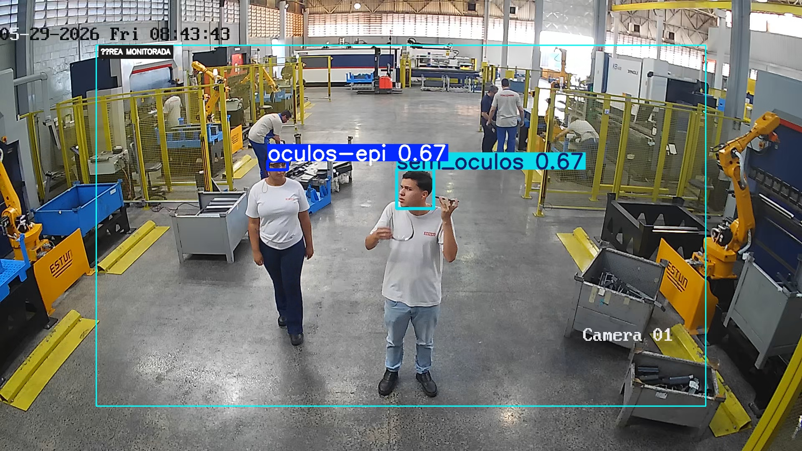
Sem Óculos (5s) • 67%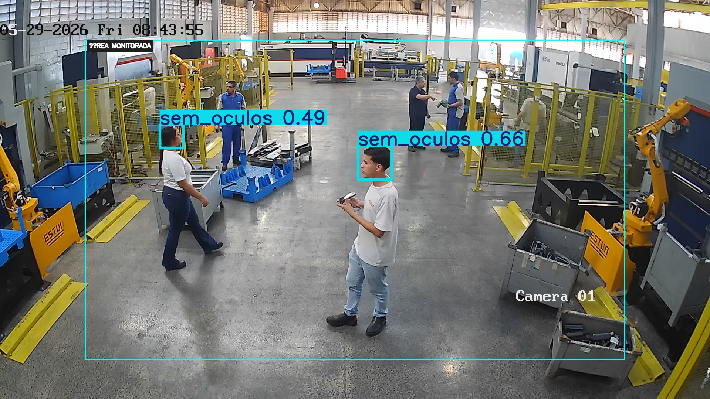
Sem Óculos (18s) • 66%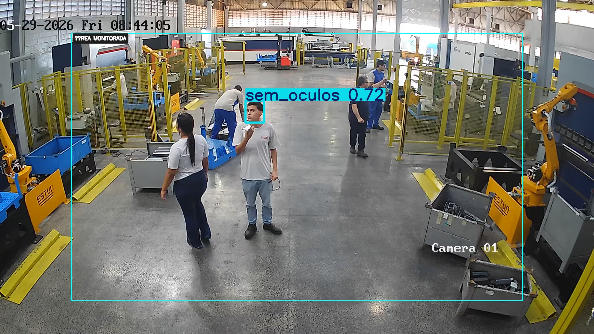
Sem Óculos (28s) • 72%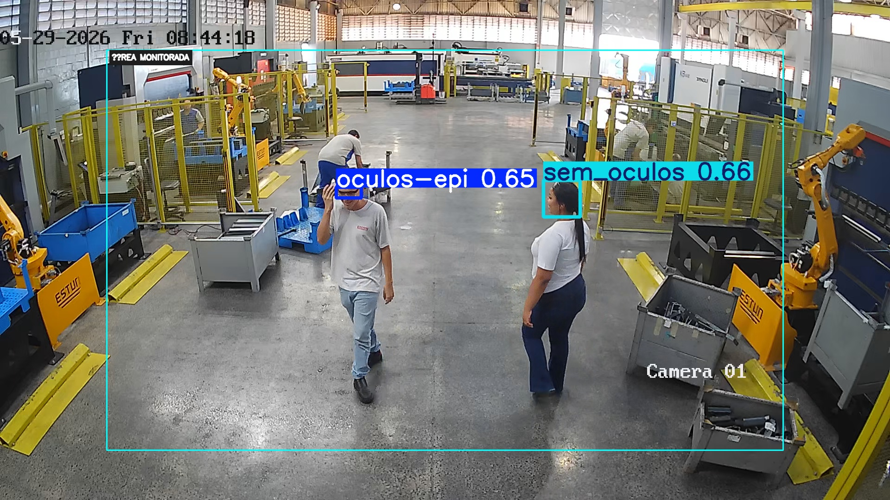
Sem Óculos (40s) • 66%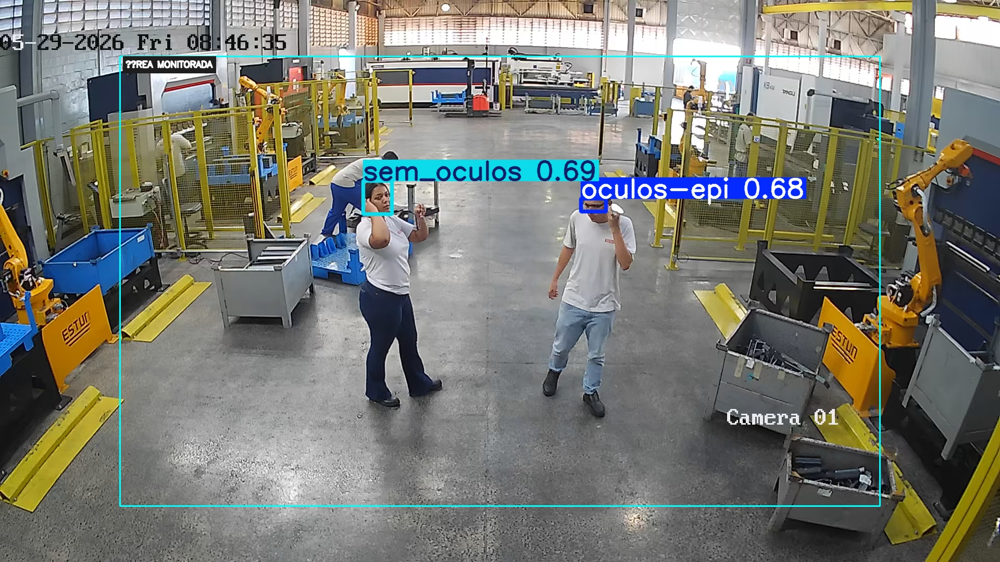
Sem Óculos (178s) • 69%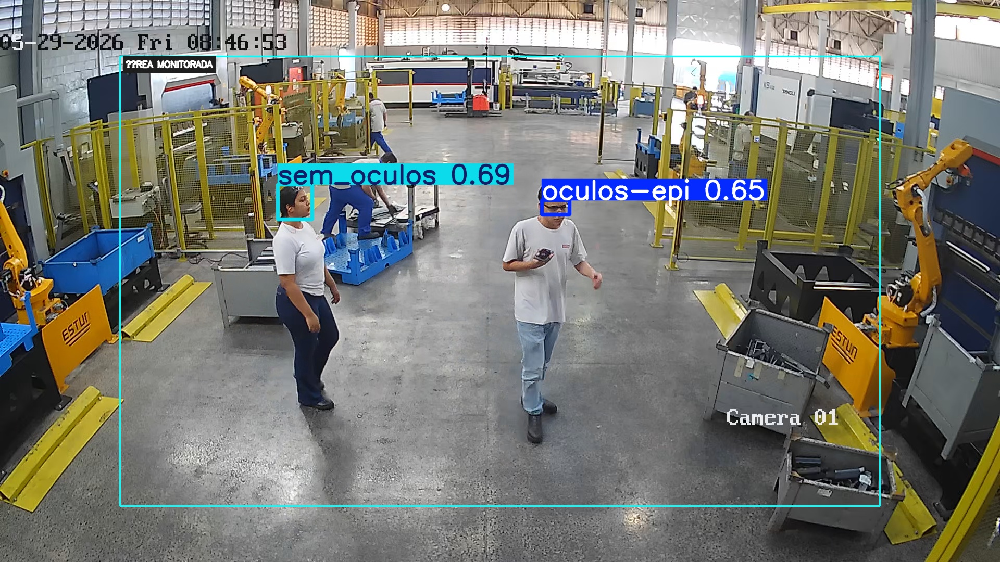
Sem Óculos (196s) • 69%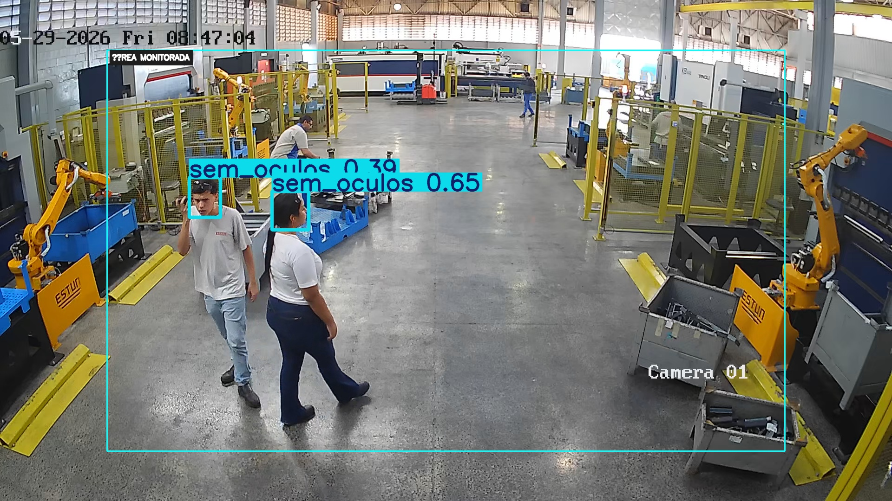
Sem Óculos (207s) • 65%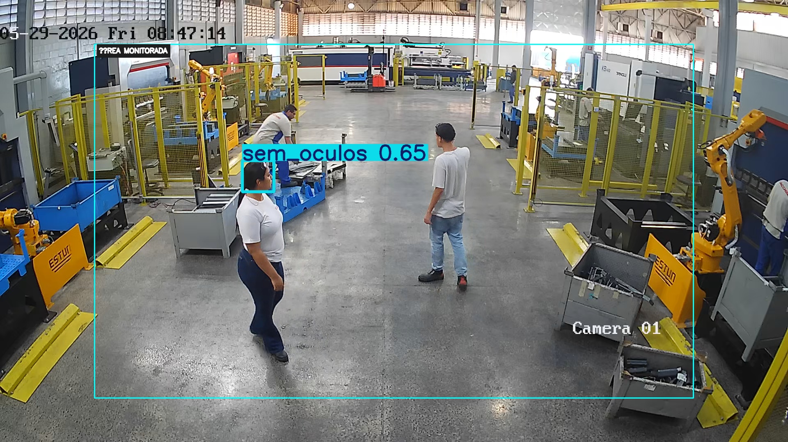
Sem Óculos (217s) • 65%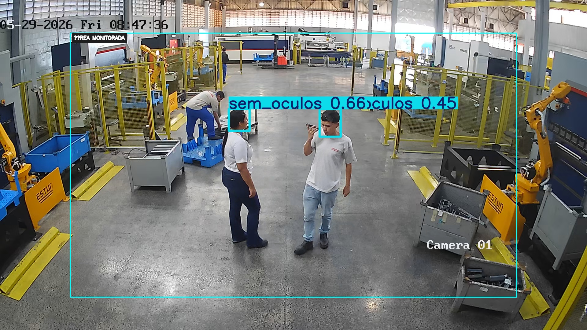
Sem Óculos (239s) • 66%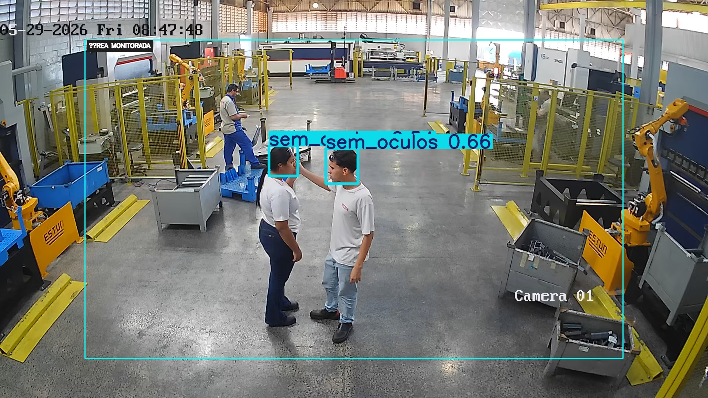
Sem Óculos (251s) • 66%Dashboard Analítico
Visualização gerencial e indicadores em tempo real
- Métricas de Desempenho: Exibe o total de registros diários, semanais e mensais, além de tendências comparativas com períodos anteriores.
- Análise por Setor: Gráficos interativos mostram quais setores apresentam o maior volume de registros e quais EPIs são os mais negligenciados.
- Calendário de Ocorrências: Uma visualização em calendário permite identificar padrões temporais nos registros efetuados.
Gestão de Registros
Controle detalhado e auditoria de cada ocorrência
- Painel de Detalhes: Cada registro armazena o nome do colaborador, o setor, o tipo de EPI ausente, a data/hora e fotos de evidência.
- Controle de Status: Os registros podem ser filtrados por status, como "Pendente" ou "Resolvido", facilitando o acompanhamento.
- Exportação de Dados: É possível gerar relatórios analíticos em PDF ou Excel para fins de auditoria e reuniões de CIPA.
| Colaborador | EPI Ausente | Status |
|---|---|---|
| João Silva | Óculos | Pendente |
| Maria Santos | Óculos | Resolvido |
| Pedro Costa | Óculos | Pendente |
Estratégia de Processamento
Análise Comparativa: Hardware Local vs. Modelo Híbrido
Para treinar o modelo com as 44.000 imagens, analisamos a rota de compra local contra o uso híbrido em nuvem (Google Colab Pro Plus).
- Opção Local (Alto Custo de Entrada): Compra de GPUs físicas robustas (R$ 8k a R$ 15k). Risco de obsolescência tecnológica acelerada.
- Opção Híbrida (Recomendada): Investimento zero em novos ativos. Treinamento imediato usando supercomputadores via notebooks na nuvem.
| Critério | Local (Físico) | Híbrido (Nuvem) |
|---|---|---|
| Investimento Ativos | Alto | Zero |
| Velocidade Startup | Demorado (Logística) | Imediato |
| Risco Técnico | Alto (Defasagem) | Zero |
| Manutenção | Facchini | Provedor Nuvem |
Olhos Locais, Cérebro em Nuvem
Investimento estruturado de câmeras e custos previstos
- Cinturão de Visão 360º Redundante: Posicionamento espelhado (Frente e Costa) para anular pontos cegos de EPIs complexos.
- Estimativa de Investimento por Setor: R$ 2.500,00 a R$ 4.500,00 (único) em infraestrutura IP local de alta resolução.
- Custo Operacional Mensal (Nuvem): R$ 150,00 a R$ 300,00 em créditos de nuvem e armazenamento Drive 2TB.
Infraestrutura Local (CapEx)
R$ 2.500 a R$ 4.500 (Único)
Kit de 4 câmeras IP Full HD/4K de alta sensibilidade e instalação física de visão cruzada.
Processamento Nuvem (OpEx)
R$ 150 a R$ 300 /mês
Manutenção de créditos no Google Colab Pro Plus e expansão de armazenamento corporativo.
Segurança e Prevenção
Monitorar e prevenir, nunca punir
- Anotação Silenciosa: Detecção de ausência do EPI gera apenas um registro silencioso no banco de dados.
- Foco Preventivo: Zero advertências, multas ou infrações aos funcionários. O sistema serve para aprimorar processos de proteção.
- Campanhas Direcionadas: Uso das estatísticas para identificar as áreas com maior índice de esquecimento de EPI e focar em treinamentos e conscientização.
| Timestamp | Sensor/Módulo | Status | Ação Tomada |
|---|---|---|---|
| 28/05 14:12:05 | Módulo 2 (Solda) | Sem Óculos | Registro no Banco (Estatística) |
| 28/05 14:15:32 | Módulo 2 (Solda) | EPI OK | Nenhuma (Conformidade) |
| 28/05 14:18:10 | Módulo 1 (Montagem) | Sem Óculos | Registro no Banco (Estatística) |
Tecnologia como Aliada da Vida
Os desafios provam que cuidar de quem faz a Facchini funcionar é o melhor caminho
Fase de Testes
Refinamento contínuo da precisão do modelo e melhorias no painel web.
Prevenção Ativa
Criação de um ambiente seguro e saudável por meio de dados inteligentes.
Muito obrigado pela atenção e pela oportunidade!
Estamos abertos a perguntas e dúvidas.
Navegação Rápida
- 1. Introdução
- 2. Cérebro (YOLOv8)
- 3. Força-Tarefa de Dados
- 4. Processo de Labelização
- 5. Roboflow & Dados
- 6. Estratégia de Treino
- 7. Desempenho de Detecção
- 8. Entendendo as Métricas
- 9. O Sistema em Ação
- 10. Dashboard Analítico
- 11. Gestão de Registros
- 12. Viabilidade de Treino
- 13. Câmeras & Custos
- 14. Propósito de Segurança
- 15. Encerramento